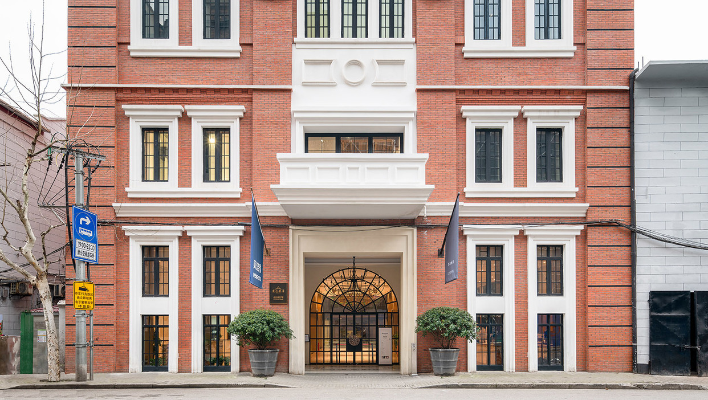

Lisson Art Gallery :
Placement as sixth :
- Valid arguments for sixth place:
- Your description highlights Lisson Gallery's strengths: its long history, pioneering role in Minimal and Conceptual Art, impressive roster of renowned artists, and global presence with galleries in London, New York, and Shanghai. These factors make it a clear contender for a top-tier position.
- Potential considerations:
- Some rankings might prioritize factors like total exhibition space, market dominance, or sales figures, which could explain why other galleries occupy higher positions.
Overall importance :
- Undoubted influence:
- Regardless of the specific ranking, Lisson Gallery holds undeniable influence in the contemporary art world. Its legacy, artist representation, and commitment to innovative art forms place it among the most significant galleries globally.
- Unique strengths:
- Lisson Gallery stands out for its historical contributions, dedication to specific artistic movements, and focus on nurturing long-term relationships with artists. These strengths solidify its unique position within the art world.
Locations :

Shanghai
2/F, 27
Huqiu Road
Huangpu District
200002, Shanghai
China
www.lissongallery.com
+44 207 724 2739
Tues - Sat, 11am - 6pm
And by appointment